Worrying about IC notation
(Code for SSS & indexed concatenation)
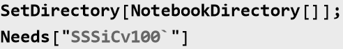
Let’s back up and make our notation consistent with the union, and extensible to strings, etc.
Symbolically:
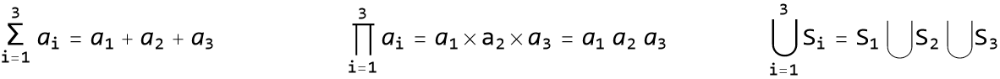
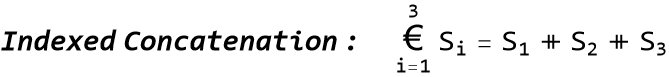
Some cases with numbers:
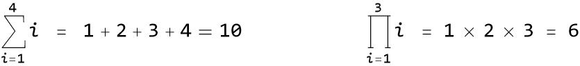
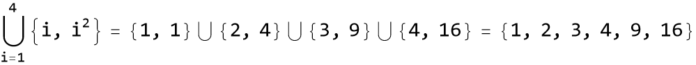
Notice that the indexed union can be written in terms of the regular union operator, and both merge multiple sets into one set. From the standpoint of the curly braces, the first “{“ and the last “}” remain, but internal cases of “} ∪ {” disappear. If the indexed and regular concatenation of lists work similarly -- except that the union eliminates duplicates and sorts the set, which we do not want -- it should look something like this:
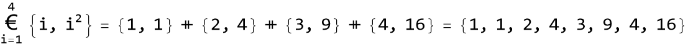
For the indexed operator we chose the euro symbol, which exists widely, but not in this context, so no misunderstanding should occur. Visually, it resembles a “C” for “Concatenate”, but also resembles our concatenation infix operator “⧺” (taken from the Haskell computer language).
Note: this is a change from the notation defined in SSSiCv100: 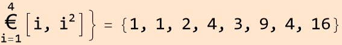
{
The new notation for indexed concatenation is consistent with the regular concatenation, and also matches the notation of the union operator.
Of course, to make a list with sublists, we’ll now need to add one extra set of { }’s, like this:
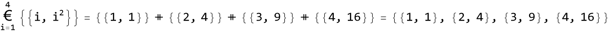
Only the curly braces nearest to the ⧺ sign disappear: occurrences of “}⧺{” can be removed. Or to put it another way, the outer set of curly braces for each term disappears, and then all terms generated by the iteration concatenated into a new list. The concatenation of lists is a list.
That leads to the next idea: the concatenation of strings should be a string. Internally, we may think of ‘ ” ⧺ “ ’ as disappearing, leaving one longer string in place of the shorter ones:
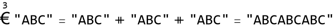
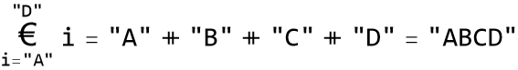
Writing more complicated string reductions may be a little more involved, perhaps like this (with “+” redefined for letters):
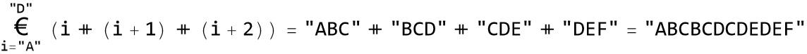
String concatenation should operate in a way that is parallel to list concatenation, since strings can be recoded as lists of integers (ASCII or Unicode codes), and vice versa.
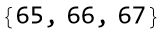
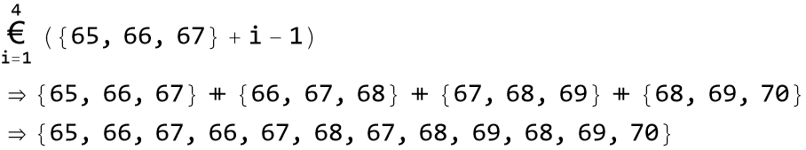
Out[21]//InputForm=
ABCBCDCDEDEF
How will this effect the process of finding a reduced version of a list of sets of integers?
Walk one through step-by-step:
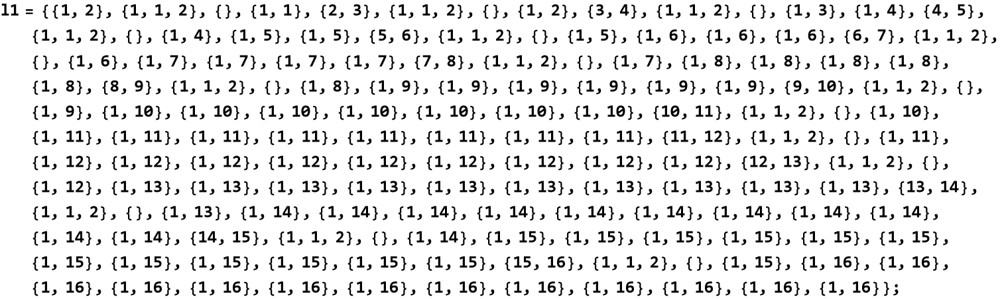
The first step is to identify any runs of exact duplicates, such as repeated {1, 16}. 13 reps of {1, 16} means 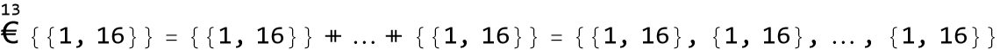
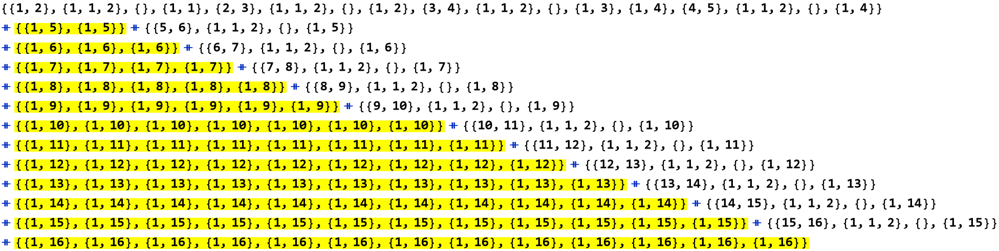
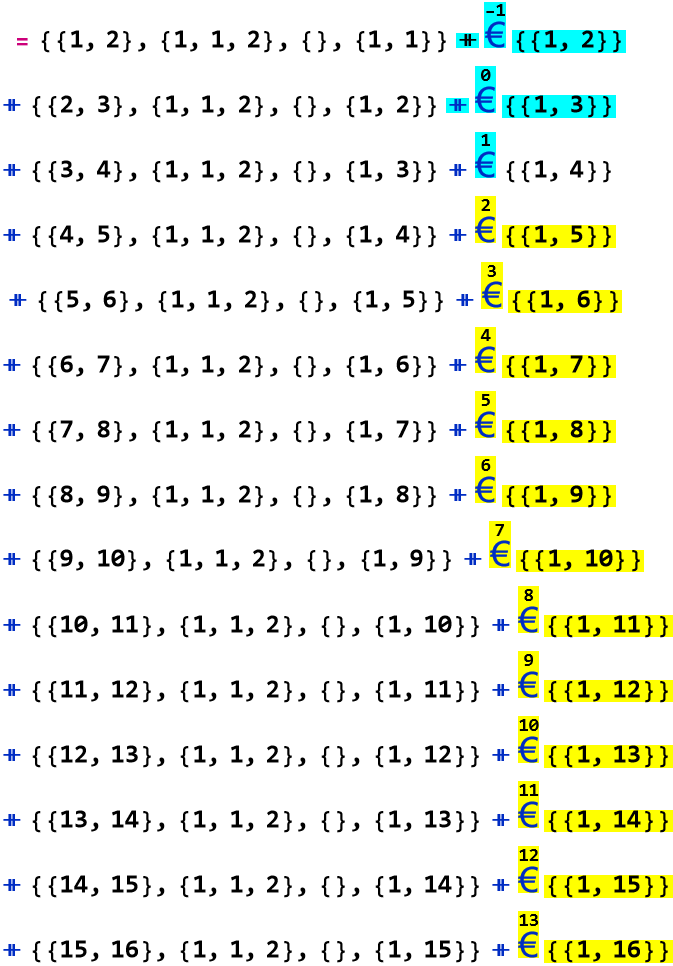
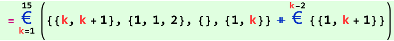
Each list highlighted in yellow was replaced, in its entirety, by the yellow-highlighted indexed concatenation (IC). The parts shown in cyan have no effect (≤ 1 copies of ...), and are added only to show that the later pattern can be extended back to the beginning. Finally a second level IC, shown in light green, summarizes the entire list. Parentheses are used here rather than adding another level of curly brackets, since the parentheses only emphasize the grouping shown, and ⧺ is an associative operation.
Problems: The ReduceSetList algorithm must be adapted to add an extra level of { }’s around the contents of all last-level ICs, and all subsequences between them. We also need explicit ⧺ operators between these pieces. Higher level IC’s will not add a nested level of {}’s, but may require grouping parentheses.
Our old notation for IC is this:
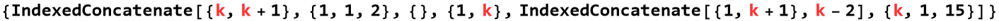
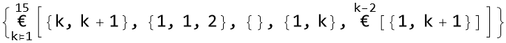
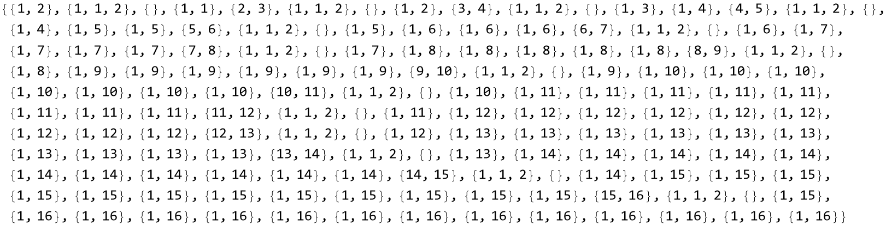
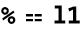
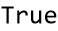
So that does correctly expand back out to the list we started with. What network is represented by this list of sets of integers? {1,2} means vertex 1 is connected to 1+1=2 and 1+2=3, {1,1,2} gives the graph edges for vertex 2, {} in the 3rd position specifies that vertex 3 has no outgoing edges, etc.
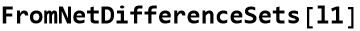
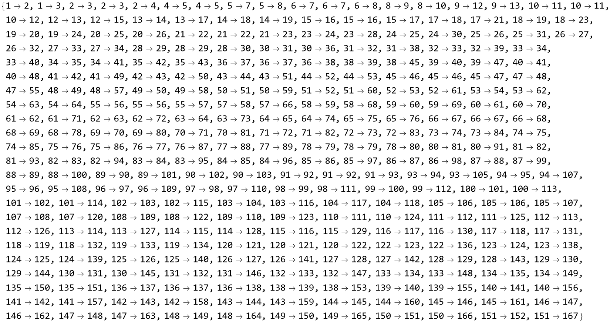
And here it is graphically:
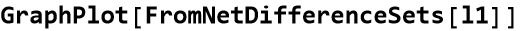
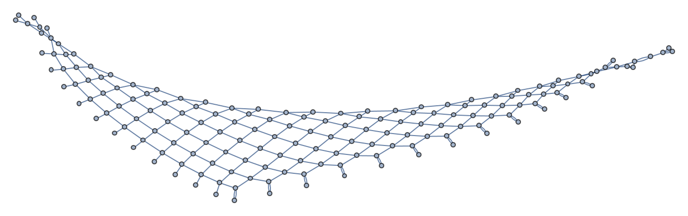
Ken Caviness, Physics@Southern, 23 October 2024